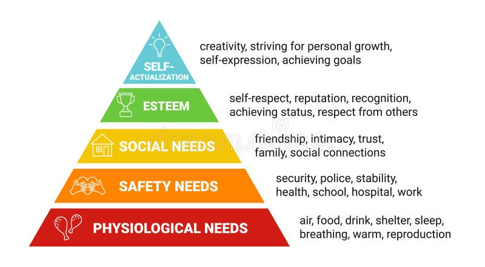

hi :(
I'm not in the brightest spirits when writing this, but heyaaa. Like always, my mood will probably fluctuate up and down as the days go by of me writing this, so keep that in mind while reading this.
Regardless of how *I* feel writing this, please sit warmly, and enjoy yourself~!
~~~
So, I'm going to be completely honest about why I'm feeling this way right now. It's something very embarassing that I hate, but it's something that's been weighing me down for the past 2 years (though it's never been as bad) as it is right now.
Until last year, I was a completely isolated individual. I had no friends, I was distant with my family, and my mental health was completely messed up. However, from the start of 2023 to the end of 2024, I had accomplished more and grown as a programmer, artist, and even started composing music. All within that short period of time. Mentally, I was unstable and suicidal, but at the same time, I had the clearest and most focused image of what I wanted to do, where I wanted to go, and I was executing those goals at an extremely rapid rate. Obviously, it wasn't all sunshine and rainbows though. I was VEEEERRYYYY lonely, had no friends like I said, and would often cry myself to sleep while listening to girlfriend/mommy ASMR YouTube videos. I felt completely isolated, and the people around me made myself even more locked off. At the time, I carried myself in a much more pretentious, confident, and slightly more rude manor than I do now, which caused me to obviously not be very popular with people. I was mocked, bullied and made into a joke. To be honest, I truly can't blame these people. I didn't treat anyone around me with respect. I didn't care about anything they had to say. I was a bad person, and I deserved to get bullied. After all, that experience would shape me into being the much more reasonable and genuine person I am today.
Speaking of "today", at the very beginning of 2025, after a lot of self-reflection and regret, I started making an honest attempt at being a more sociable and kind individual to the people around me, and it's worked very well! I have friends now, I have more that 5 people in my contacts, I make jokes, I laugh at jokes, I sleep peacefully at night almost everyday, knowing that the next will have more laughs and joy, and that I'll get to hang out with my friends, and go to an environment where people don't hate me. I still don't have a girlfriend, but at this point I've realized that I never needed one to begin with as this whole experience has taught me the true value of platonic relationships.
However, in the process of opening my heart to new people and new joys, I have jeopardized the things that kept me alive to this day. The things that, although they didn't matter more than friendship and social comfort, gave my life meaning, purpose and direction. It's hard to really put into words, but the best way I can describe it is my "soul".
I'd like to give an example. Last year, I made a new friend. We'll call him B. Very inspiring name, I know. Just like me, B was really into drawing in an anime style. I was really happy about this, because I thought I was basically a carbon copy of myself. I asked if I could see his sketch book, and he said yes. When I looked through it, I realized that it was mostly copy drawings, and very, very few original works. This wasn't (and still isn't) something that completely shocked me or blew me away, so I handed him back the book. Personally, I don't have a particularly strict 'no copy drawing' rule for my sketchbooks.... but the reason I don't do them is because I want to improve. I want to see growth as I flip through the pages, and I want to see my interests and habits reflected in the drawings. B however, has no interest in this. Well, it's actually that I think he really does deep down, but he doesn't have the drive and/or discipline to be able to practice and face failure/hardships. It's something really depressing as well, because he really loves anime and manga a LOT. He's always talking about how much manga he reads, and through doing so much copy drawing so much, he's actually got much better pencil control than me. But it's also kind of a hopeless (if not, pathetic) situation he's in. He goes on about how if he had a tablet, he would be doing more practice, or if he had proper inking pens, he would actually start trying to draw on his own (EVEN THOUGGHH, I DONT EVENN HAVE A PROPER SKETCHBOOK, I've literally been using lined school books bought from grocery stores for drawing, ANDDDD I've been using a MOUSE for inking AND RENDERINGGG whenever I do digital stuff, for the last 2 years...., sigh..). It's sad. And I can almost completely understand his mindset when I consider the people around him.
And so I realized, this classroom is filled with lazy bums. Okay, well, that's pretty rude... I think it's actually the entire world filled with these exact kinds people. So they aren't particularly lazy, it's just that it's apparently normal for people to live like this. They spend a lot of time consuming media (mostly on SNS), engaging in low-quality discussions/discource and have no desire to create or find any meaning in life (outside fulfilling their programmed biological meaning of life, which is to have sex and prolong the existance of their genes). By the way, I know I sound exactly like the pretentious, smarty-pants that I described earlier. This is why I've chosen not to say any of this information to them. Besides that, who really cares if they feel this way? Who cares if you don't put in your 100% in life, or if all you do is consume, consume and consume. Life, fundamentally, is pointless. There is no goal, and if anyone tries to enforce one upon you, they are probably fat.
However, this way of thinking becomes dangerous for people like me and 'B' who DO have a desire to go beyond just this.
I recently discovered Maslow's pyramid of human needs, and I think it describes my thought process perfectly.

Image stolen shamelessly from dreamstime.com
Basically, what I'm trying to say, is that people like me who are trying to reach the top level of self-expression sometimes are not able to, because it requires the lower two needs (and of course, everything else under them) to be fulfilled. B is trying to reach that level, but due to the lack of people who support him, people who are like him, and people who have a positive lifestyle for him to copy, he has allowed his art skills to deteriorate and collapse, just so he can feel the comfort of being able to relate to others. The especially sad thing, is that because he's also technically still better at drawing than everyone else (except me but I don't draw in public looooollllll), he's also gained the title of 'the art kid', which has also given him a feeling of self-respect and status. And because he's achieved these 2 levels, you'd think he could reach that top level, but because he's gained so many bad habits, laziness, and a false (or maybe not false if you don't care) sense of self-worth, he will likely never reach that top level.
This chart could also apply to me 2 years ago. I reached for my own personal goal, but because I lacked friends, I had shaky bonds with my family, and I didn't have much self-love or respect for myself, my mental health completely crashed and I struggled to simply function as a human being. Which ended in me trying to end it all, failing VERY badly, and being forced to continue to live my life like nothing happened. So now I've chilled down, opened up, and I've been accepted by the people around me. But I've also started to exhibit the same laziness slowly, and I've felt weirdly comfortable and confident about myself despite doing nothing about.
And when I remembered what I've been spening my entire life trying to do and the dreams I set out to accomplish, that's when I starting thinking about everything I'm writing at this very moment. I think I've been wanting to write about this since... April???
I don't have a full-proof solution other than to surround yourself with people who are kind, and share the same goals as you but there's literally nobody in a 100km radius that is like that. I'm not kidding. I could go into more details about the why's and whatnots, but this is already getting very personal so... I'd rather keep it zipped. My only applicable solution at the moment that I've been attempting thus far, is to try and balance a positive social life with pursuing my dreams. The problem with that, is that 'just balance it bro' isn't a true solution because the problem isn't that I have friends, or that I have no time (I have PLENTY of time, trust me lol), it's that I'm picking up bad habits and a negative lifestyle that hinders my current goals. So you might think, 'just stop the habits' or 'just ditch your friends bro'. But the problem with the first solution is that doing so would alienate me from my friend group, and make me more of an outsider than I already am. I'm telling you, I'm already enough of weirdo. I've BEEN trying to balance this stuff. They'll do things like litter, or dissmiss school work because they don't feel like it, and see me act differently, and then place me on a pedastal or look at me like an alien and patronize me. I don't like any of theses things already. Do you want me to do that more? I hope not :(. And the problem with the second one.. I don't even think I need to point out. The people I'm with are the best of the best people. They're LITERALLY both the cool kids of the class, and the smartest. But at the same time, that bar is so low, it's depressing...
.......so yeah, this has been stirring in my brain for a long time. Thank you for listening :D
~~~
heh... this whole psychology thing is totally easy... i bet i could be a therapist.....
Anyways, to lighten the mood up a bit, I think I want to do the music section a bit early this time~~!!!!
~~ SONG OF THE ENTRY ~~
SONG :: FU-RU-HEHEHE (ふるへっへっへ) - P MODEL
And so, another 'actual song' hits the towers.....
I really, really like this track :)))!!!! In Japan, it's seen as a bit of a meme, and in the west I haven't even heard ANYONE talk about any of Hirasawa's projects, but I genuinely REALLY like track! The panting/breathing as the main rhythm, followed by that loud clapping, into a clean bass.... it simulataneously pumps me up so much, and deflates me (in a happy way) at the same time! I think the muffled, low-quality-ness in the video/TV version sounds pleasant, but the album version's drums develop WAYYY more in the 3rd part of the whole song, making it sound cooler.
But honestly, Hirasawa has performed and remixed this song so many times, that I think there might be a version for anyone! So please, listen to this track, ANDD all of P MODEL, KAKU_P-MODEL and all of Susumu Hirasawa's music :)
SONG LINK ::
YouTube (Album Ver.)
YouTube (Video Ver.)
==========
~~~
..actually, now that I think about it, this year I've actually been more dedicated when it came to consuming high quality media. I was about to type a whole paragraph on social media and it's effects on me (and also it's lack of effect on my life if that makes sense?). But no, I've actually watched and read AND played more really good stuff this year and I'm continuing to. So I'm gonna talk about that stuff~!!! \^^/
-- Suzumiya Haruhi (First 2 volumes so far!) --
Early in around April (according to my search history), I started reading the original Haruhi Suzumiya light novels. This is my first time reading a light novel series EVER so I wasn't sure what to expect.. but I've actually been having a BLAST! From the beginning, I already knew there were both manga and anime adaptations of them, but I intentially decided to go with the original. Partially, because I wanted to experiment, and partially because I tend to be an advocate of watching the original version of a show or playing the original version of a game rather than it's remakes or re-tellings. So I wanted to put my money where my mouth is, and actually do it for something I've never experienced before. Another smaller reason, is that I wanted something a bit more challenging for my brain. I've noticed that sometimes when I'm watching a show or even playing a game, my brain will just completely turn off and enter auto pilot. I'll stop paying attention to what characters are saying and I'll completely lose focus of the activity. I'd say for games this isn't too bad, because this only happens when I'm doing mundane activities, or when I'm playing a more arcade-y style game that I'm good at so I don't need to focus. But when I'm watching anime, this is really bad for me becuase I end up missing out on important story beats (this is precisely what happened while watching a certain other anime I'll talk about soon...). So by reading a book instead, I'm forced to pay attention, and when I DO zone out, I don't miss anything since the entire pace of the book is determined by me! 'tis the fun of reading.. also, I haven't read a single book (aside from manga) that I've been genuinely invested in since 7th grade so I wanted to try one :)
But anyways, onto the actual books, I've read the first 2 volumes so far! It's been a hot minute since I finished the second one, but I plan on starting the third volume veryyy soon. Honestly speaking, both parts I read are honestly so packed with intereting developments and new plot points... I know there's like 11 volumes... but dang! There's so much interesting stuff!! I'm not going to treat you like a kid and spoon feed you the plot, and I will obviously talk about spoilers, so please read the original books!!
I guess I should start with the protaganist... I kind of dislike him? But I think I already understand why he's the way he is and the role he serves in the entire plot. The opening of the very first volume I think gives it away, so here's my predicition: ..I think it may be about our joy, and sense of imagination in life and how we lose it / how it changes us?? That's what I think so far, but I know I may be wrong. Haruhi having the ability to change the world without knowing it, and in turn making the world more interesting, and indirectly (or indirectly?) fueling her own desire to simply find interesting stuff and enjoy life, and I think her wishing for Aliens, Time travellers and Espers, then having the exact 3 things show up, but only our protaganist knowing is meant to some kind of intentional thing, I think to imprint Haruhi sense of wonder onto him. One thing that I'm a little hung up on, is the reasons for why they observe Haruhi though. Assuming it's true that every supernatural thing happening is created by Haruhi, I'd say Koizumi's is most interesting. However Nagato's is more credible and is also quite interesting. On the other hand... Asahina's feels.... weird? It's a strange one that I haven't gotten a full grasp of yet. So far, it just doesn't seem as deep or interesting but I'll give the series time to develop things out.
That's mostly stuff in the first book, and the second, despite being shorter, re-introduces a HUGE factor in Haruhi's ability that I didn't think too hard on when I was done with the first book.. That is, Haruhi is kind of a narcissistic, bratty child. At first, I considered this as just her quirky little anime 'dere' type, but once you remember what her ability is, you immediately get concerned about the safety of everyone in the SOS brigade, the maliability of this world and the seemingly infinite amount of scary stuff that could happen. And something really scary happens... well, not horror movie scary, but arguably something worse if it were real. I'm 100% sure that the ENTIRE EXISTANCE of Tsuruya was caused by Haruhi's own selfishness, and the entire sequence of going to Tsuruya's house, literally drugging Asahina, and almost forcing her to kiss Koizumi (lwky I was smiling for that part, asahina rlly deserves him :) ).. it all genuinely freaked me out, because it's entirely possible that the existance if Tsuruya, her house, the sheer size of the house, the Tequila and everything else, could be the result of Haruhi's selfish (and kinda perverse) desire to make the film. There are fun, smaller ways that use her power like the movie editing itself because she wanted it to be done, or the Mikuru beams are kinda cool, but this one had me feeling kinda scared. And the fact that stopping her "fun and whimsy" could potentially destroy the world is horrifying. The 2nd part also plants a bunch of seeds of doubt in all of the Brigade members, but it's a bit baseless so far, so I'll need to read the next part soon.
BUT ANYWAYS, this has been a crazy ride so far. I WILL be reading the next part soon, mark my words.
I really wanted to talk about the other stuff I've been doing like playing the original .hack//IMOQ games or watching Code Geass and Lucky Star for the first time here, but this entry is getting really big...
...but I think that's a really good thing! To tell you truth, I started writing this thinking about how frustrated I am about myself and my life, but now here I am. The same as always, going on and on and on about the cool epic Japanese thingies. I forgot how much I enjoy expressing myself! I know I have friends now, but they aren't even a quarter as deep into this stuff as I am ^^;... I know I said that my mood fluctuates from day-to-day, which in turn influences the contents of these entries, but EVERYTHING I've written so far has been in one shot. The only 'break' I took was to go and take a bath. Just realizing this actually the longest entry so much makes me realize how much I've missed doing this stuff..
I feel so happy!
~~~
Well.. I didn't really expect to come out of this feeling so joyful, but.. all's well it ends while, right..? ^^; It's especially funny because I thought it would only fluctuate from day to day, but everything here was written in only one.
But that's all for now, so as always, I hope you had a good time!
Cya!!!!!!
Return to the Chronicle.